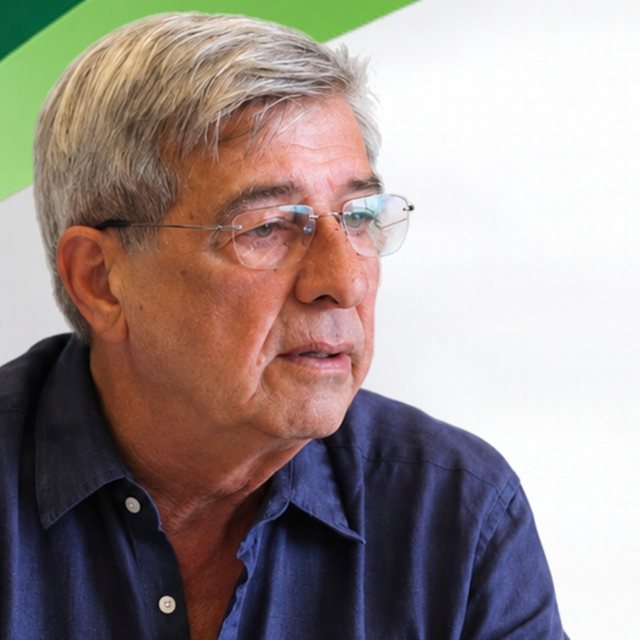

Il nuovo podcast di Grandangolo
La Mafia,la“Stidda”
un audiolibro podcast del best seller diFranco Castaldo
Dall'11 dicembre
gratis su Spotify
e su tutte le piattaforme
SCOPRI IL PODCAST →
e su tutte le piattaforme